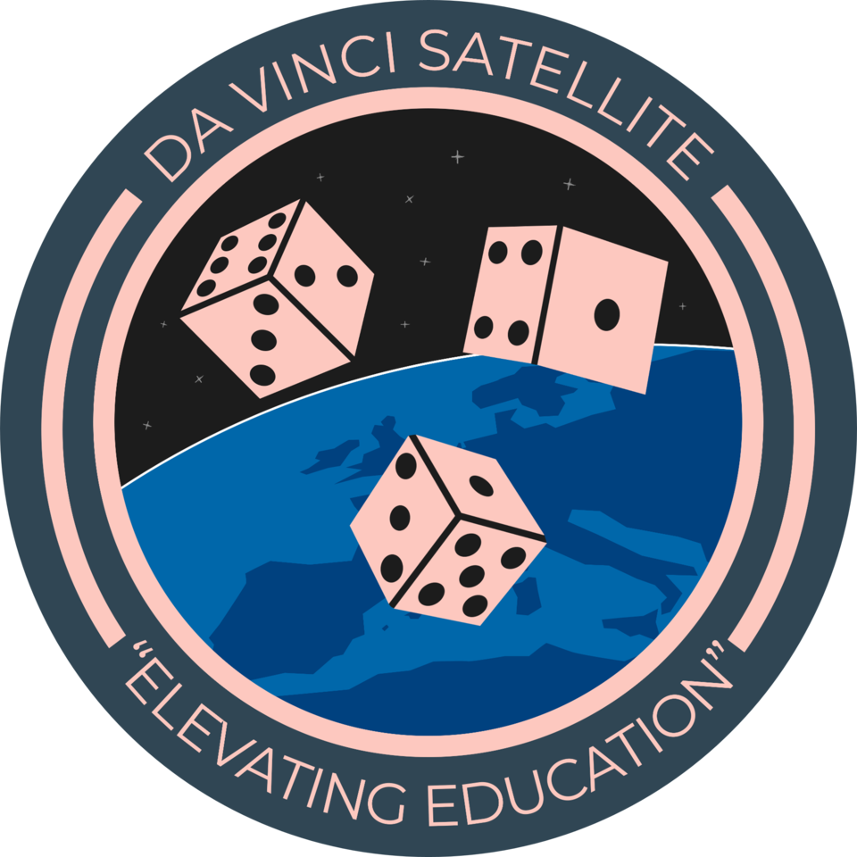
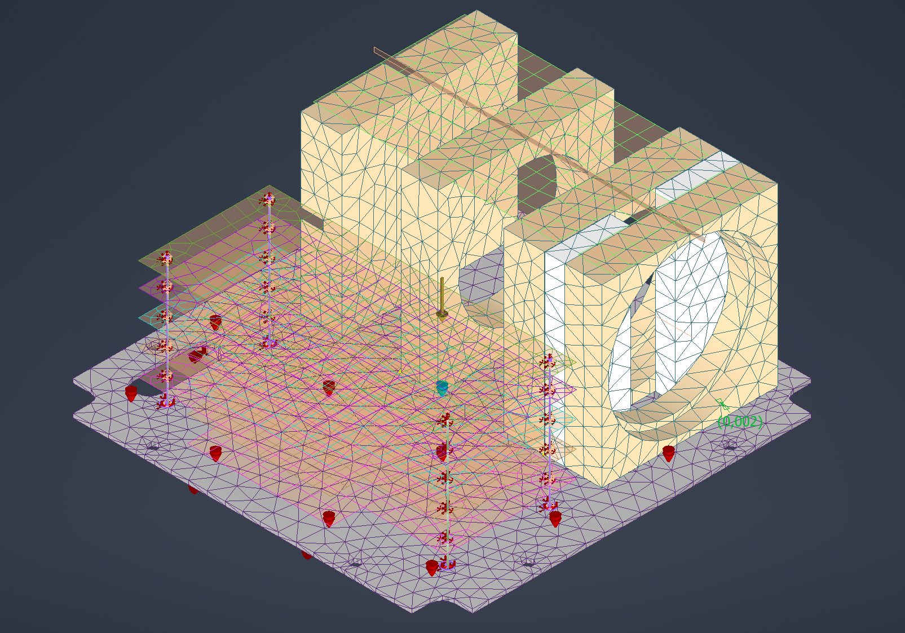
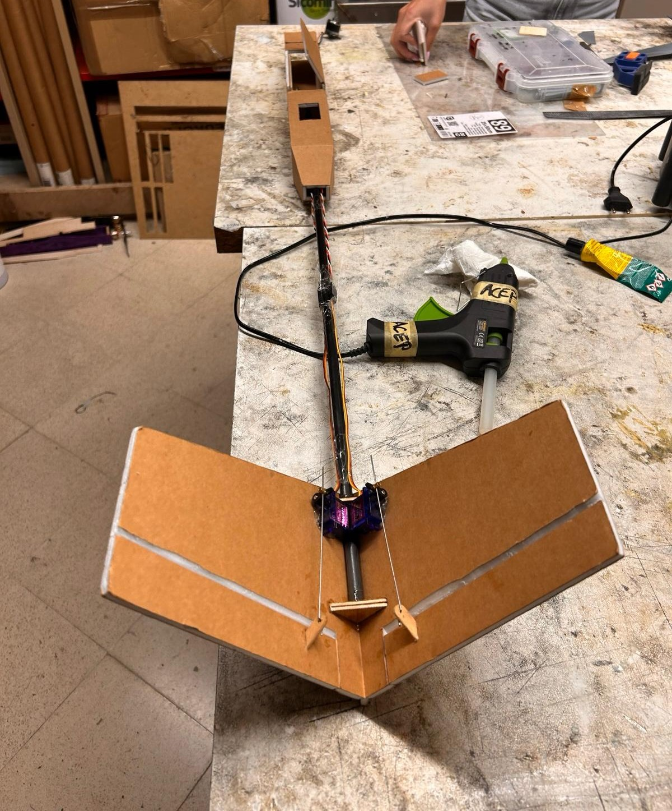
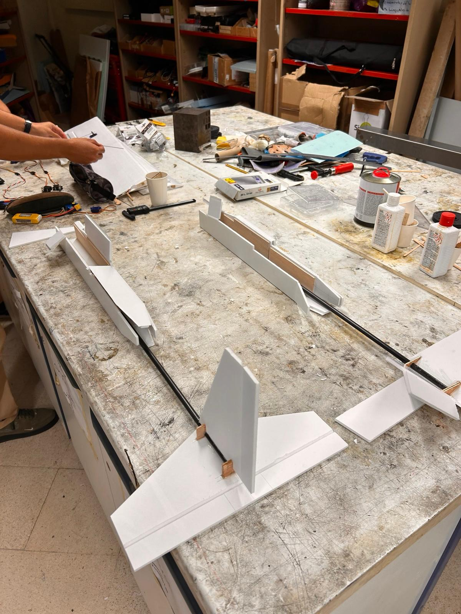
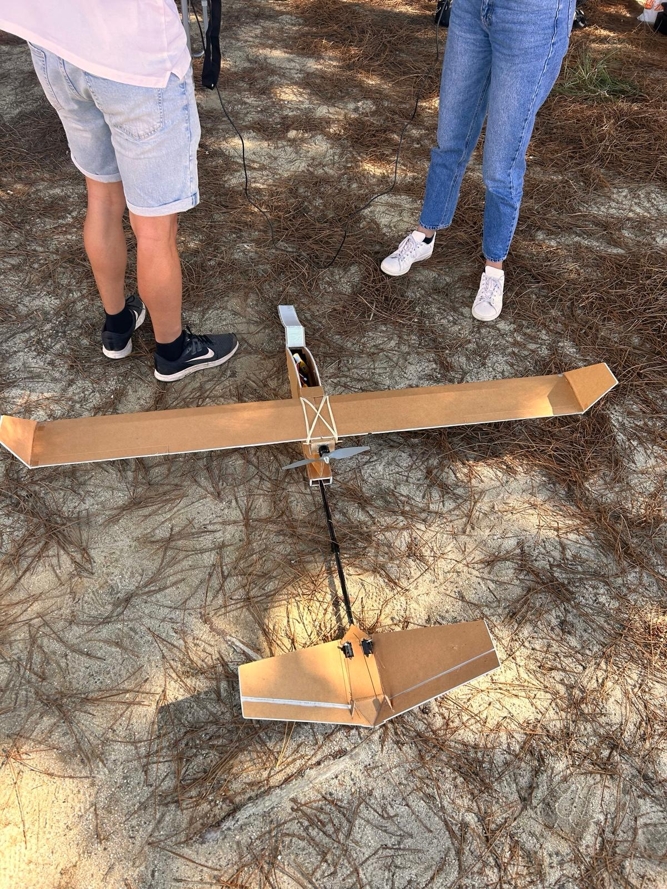
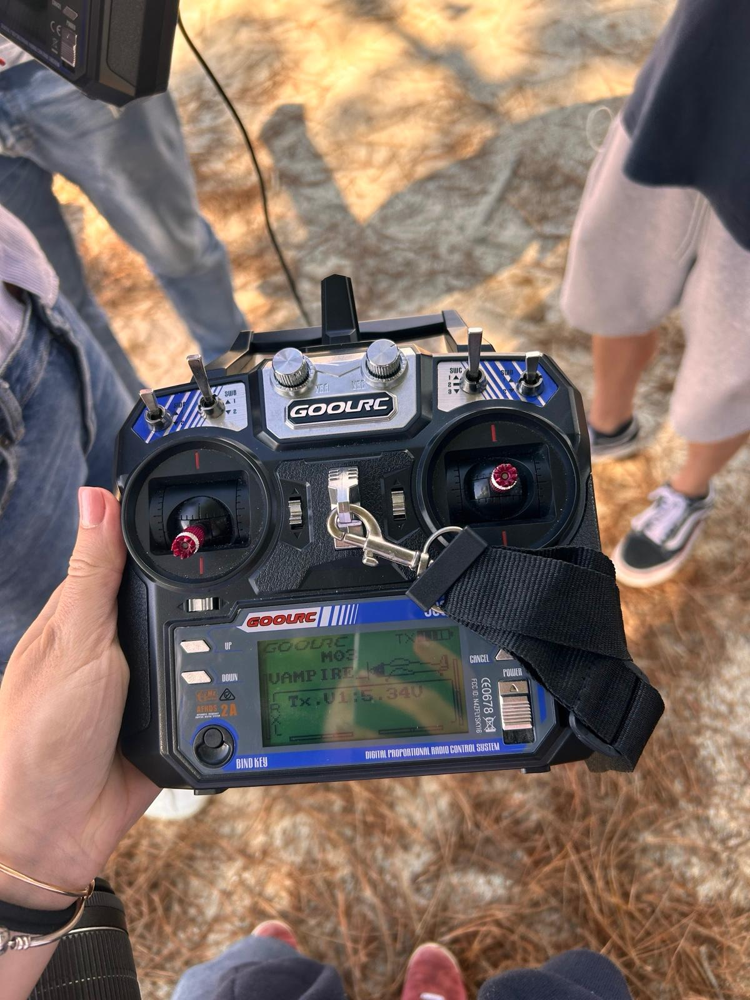
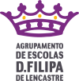

Work
What I've been building

Mar 2026 – PresentI work on the structural verification of the Da Vinci satellite, dedicating around eight hours per week to ensuring its structure can withstand launch. My responsibilities include static and modal FEM analyses of the payload components, and the development of a simplified whole-satellite model to support system-level structural verification ahead of submission to ESA. Contributing to mission hardware intended for orbit is, for me, the clearest expression of why I chose this discipline.

I contribute to the development of TU Delft’s first Teach-the-Teacher course on wind energy, dedicating around six to eight hours per week to writing storyboards, designing content templates, and sourcing visual and animation references with the academic lead. The course is intended to give primary and secondary school teachers the resources to introduce wind energy into their classrooms, an objective I find particularly worthwhile, given the importance of engaging young people with renewable energy.
I dedicate roughly two to four hours per week to supporting more than 2,000 learners worldwide on the Introduction to Aerospace Structures and Materials MOOC, moderating technical discussions and resolving conceptual questions. The experience has reinforced my view that the quality of teaching directly determines whether students persist with difficult material.
Over a one-year cycle, I designed and manufactured a radio-controlled aircraft within a multidisciplinary student team, carrying out aerodynamic analysis in XFLR5 alongside the structural design and hands-on prototyping. It was my first real experience of taking an aircraft from concept to something that genuinely flew, and the moment it first left the ground was another confirmation that this is the work I want to dedicate myself to.





Jan 2025 – Jul 2025I tutored children aged 10–12 in mathematics for approximately ten hours per week, supporting their numeracy and problem-solving. Working with this age group reinforced my interest in teaching and in helping younger students build confidence with technical subjects.